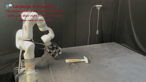
I am the co-founder and CTO of Dexmate,
where we build general-purpose robots for dexterous manipulation through hardware-software co-design
and sim-to-real learning.
I received my Ph.D. in robotics from UC San Diego, advised by Xiaolong Wang
and Hao Su,
and my bachelor's degree from Shanghai Jiao Tong University. I have also worked with the robotics teams at
NVIDIA and Google X, and received the Qualcomm Innovation Fellowship in 2023.

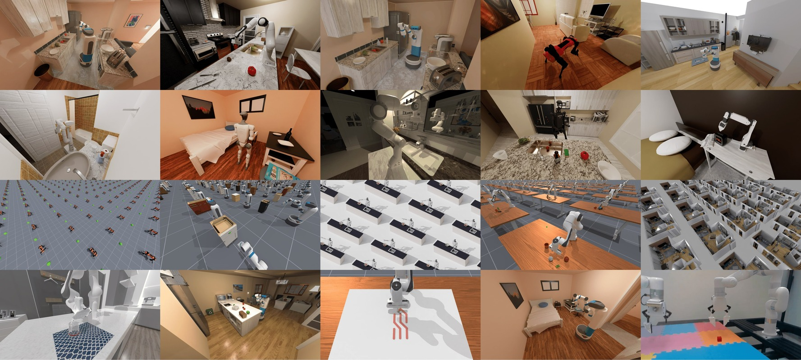
ManiSkill3: GPU Parallelized Robotics Simulation and Rendering for Generalizable Embodied AI
Stone Tao, Fanbo Xiang, Arth Shukla, Yuzhe Qin, Xander Hinrichsen, Xiaodi Yuan,
Chen Bao, Xinsong Lin, Yulin Liu, Tse-kai Chan, Yuan Gao, Xuanlin Li, Tongzhou Mu, Nan Xiao,
Arnav Gurha, Viswesh Nagaswamy Rajesh, Yong Woo Choi, Yen-Ru Chen, Zhiao Huang,
Roberto Calandra,
Rui Chen, Shan Luo, Hao Su
Robotics: Science and Systems (RSS) 2025
[project]
[paper]
[code]
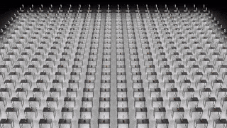
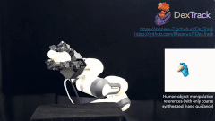
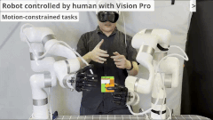
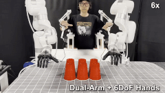
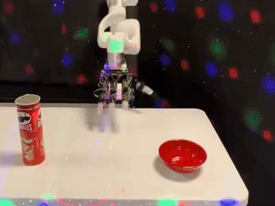
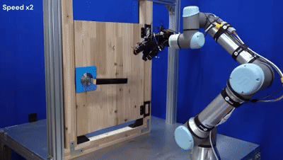
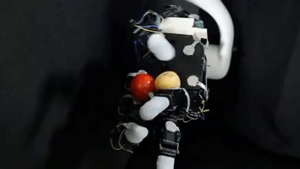
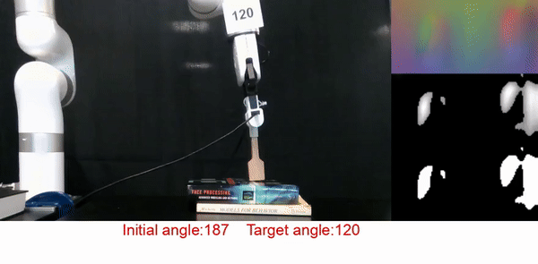
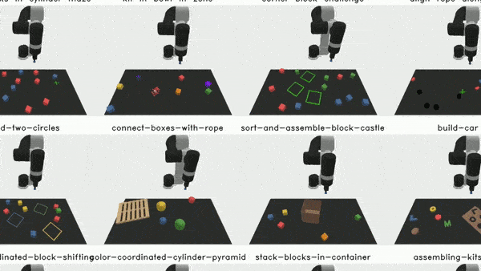
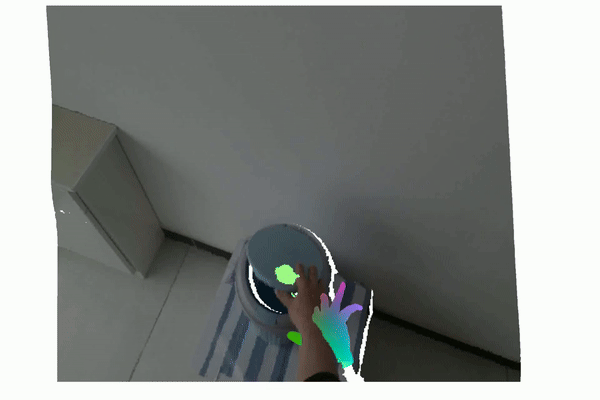
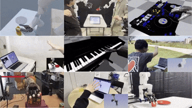
AnyTeleop: A General Vision-Based Dexterous Robot Arm-Hand Teleoperation System
Yuzhe Qin, Wei Yang, Binghao Huang, Karl Van Wyk, Hao Su, Xiaolong Wang,
Yu-Wei Chao, Dieter Fox
Robotics: Science and Systems (RSS) 2023
[project]
[paper]
[web visualizer
code]
[retargeting code]
[video]
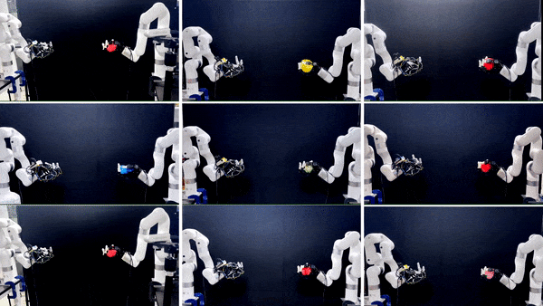
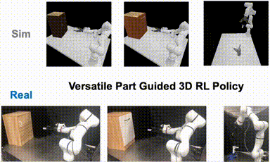
Part-Guided 3D RL for Sim2Real Articulated Object Manipulation
Pengwei Xie*, Rui Chen*, Siang Chen*, Yuzhe Qin, Fanbo Xiang, Tianyu Sun,
Jing Xu, Guijin Wang, Hao Su
IEEE Robotics and Automation Letters (RA-L) 2023
International Conference on Robotics and Automation (ICRA) 2024
[paper]
[code]
[video]
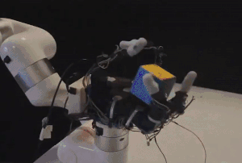
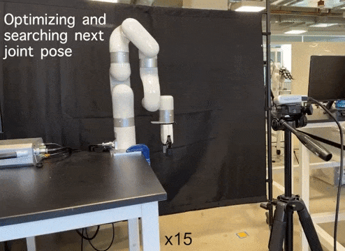
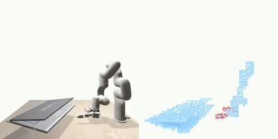
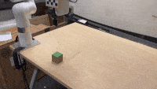
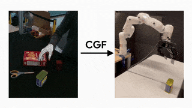
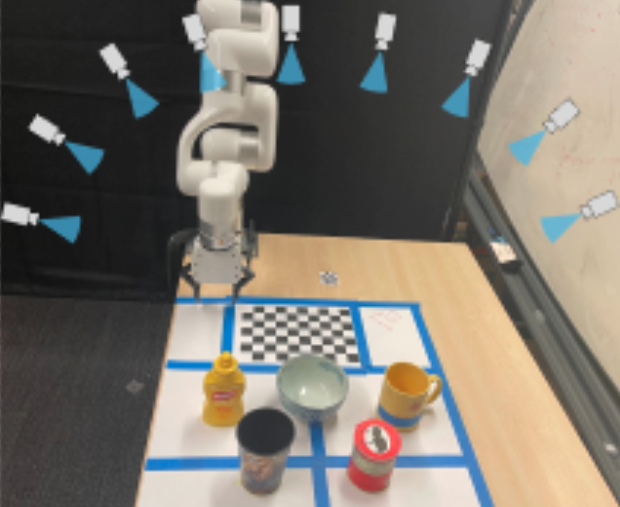
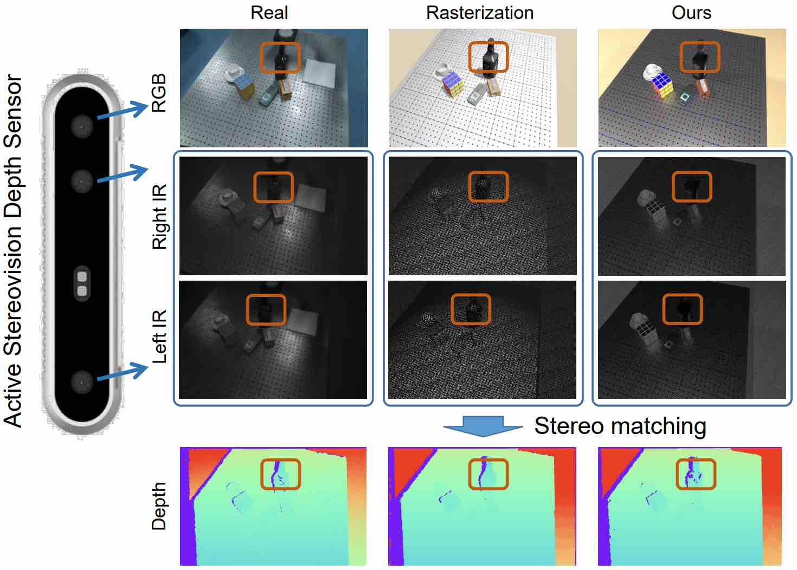
Close the Optical Sensing Domain Gap by Physics-Grounded Active Stereo Sensor Simulation
Xiaoshuai Zhang*, Rui Chen*, Ang Li, Fanbo Xiang, Yuzhe Qin, Jiayuan Gu, Zhan Ling,
Minghua Liu, Peiyu Zeng, Songfang Han, Zhiao Huang, Tongzhou Mu, Jing Xu, Hao Su
IEEE Transactions on Robotics (T-RO) 2023
[project]
[paper]
[code]
[video]
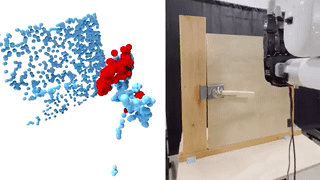
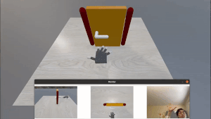
From One Hand to Multiple Hands: Imitation Learning for Dexterous Manipulation
from
Single-Camera
Teleoperation
Yuzhe Qin, Hao Su*, Xiaolong Wang*
IEEE Robotics and Automation Letters (RA-L) 2022
International Conference on Intelligent Robots and Systems (IROS) 2022
[project]
[paper]
[code]
[video]
[slides]
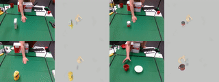
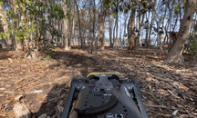
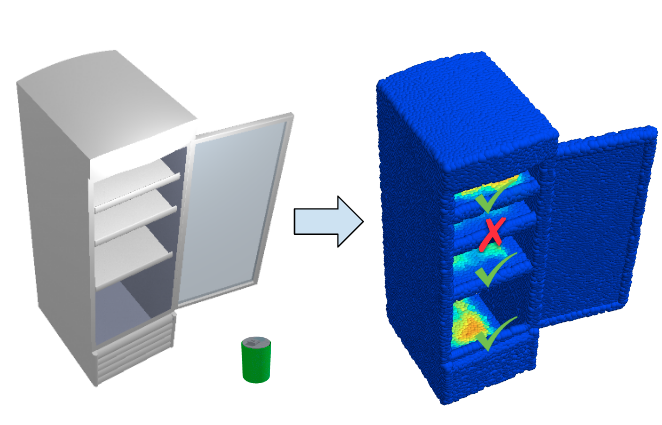
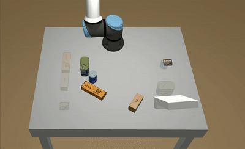
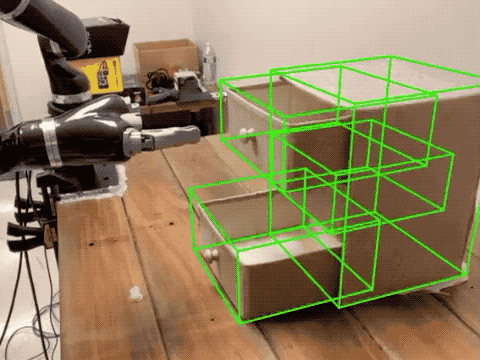
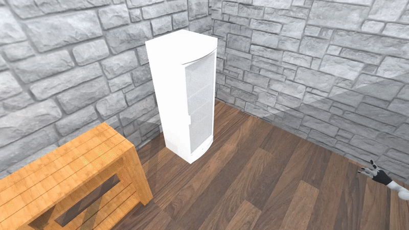
SAPIEN: A SimulAted Part-based Interactive ENvironment
Fanbo Xiang,
Yuzhe Qin,
Kaichun Mo, Yikuan Xia, Hao Zhu, Fangchen Liu, Minghua Liu,
Hanxiao Jiang,
Yifu Yuan, He Wang, Li Yi, Angel X.Chang, Leonidas J. Guibas and Hao Su
Conference on Computer Vision and Pattern Recognition (CVPR) 2020 (Oral)
[project]
[paper]
[code]
[video]
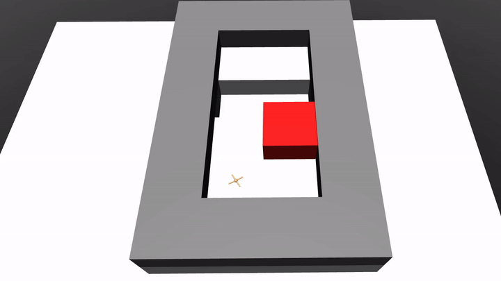
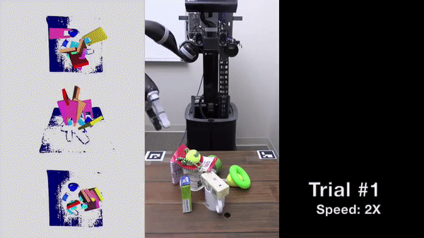